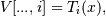

numpy.polynomial.chebyshev.chebvander¶
- numpy.polynomial.chebyshev.chebvander(x, deg)[source]¶
Pseudo-Vandermonde matrix of given degree.
Returns the pseudo-Vandermonde matrix of degree deg and sample points x. The pseudo-Vandermonde matrix is defined by

where 0 <= i <= deg. The leading indices of V index the elements of x and the last index is the degree of the Chebyshev polynomial.
If c is a 1-D array of coefficients of length n + 1 and V is the matrix V = chebvander(x, n), then np.dot(V, c) and chebval(x, c) are the same up to roundoff. This equivalence is useful both for least squares fitting and for the evaluation of a large number of Chebyshev series of the same degree and sample points.
Parameters : x : array_like
Array of points. The dtype is converted to float64 or complex128 depending on whether any of the elements are complex. If x is scalar it is converted to a 1-D array.
deg : int
Degree of the resulting matrix.
Returns : vander : ndarray
The pseudo Vandermonde matrix. The shape of the returned matrix is x.shape + (deg + 1,), where The last index is the degree of the corresponding Chebyshev polynomial. The dtype will be the same as the converted x.